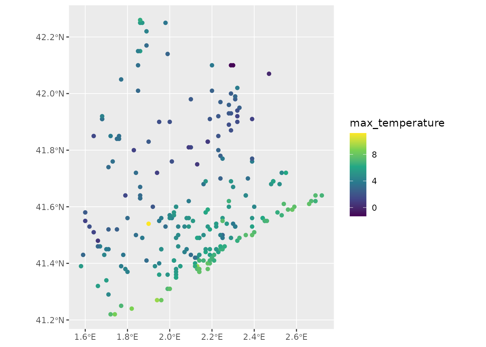
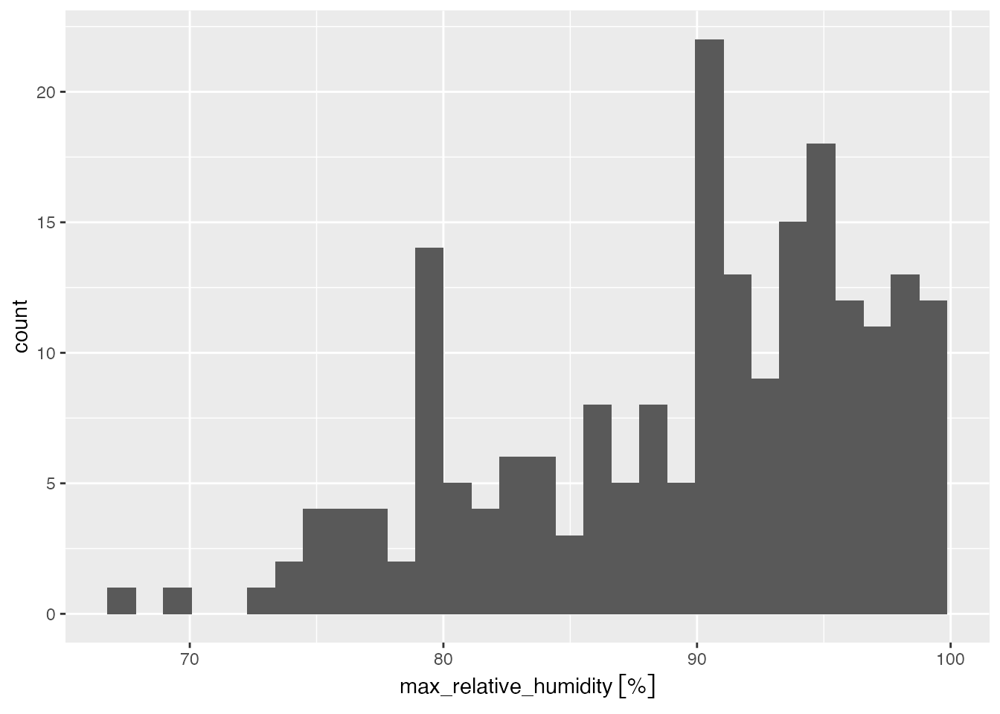

library(meteospain)
library(ggplot2)
library(ggforce)
library(units)
#> udunits database from /usr/share/xml/udunits/udunits2.xml
library(sf)
#> Linking to GEOS 3.12.1, GDAL 3.8.4, PROJ 9.4.0; sf_use_s2() is TRUEMeteoclimatic service
Meteoclimatic is a non-professional (amateur) network of automatic meteorological stations. This network cover all Spain, but does not offer quality testing of the data.
Meteoclimatic options
Temporal resolution
Meteoclimatic API only offers aggregated data for the current day,
so, in this case the resolution parameter is limited to
“current_day”.
Stations
Meteoclimatic API does not accept multiple stations in the same
query. But it has station codes that can access the data from several
stations in the same geographic area (i.e. “ES” for all stations,
“ESCAT” for all stations in Catalunya, “ESCAT08” for all stations in
Barcelona province). So, the stations is limited at length
one.
Example
api_options <- meteoclimatic_options(stations = 'ESCAT08')
api_options
#> $resolution
#> [1] "current_day"
#>
#> $stations
#> [1] "ESCAT08"Meteoclimatic stations info
Accessing station metadata for Meteoclimatic is simple:
get_stations_info_from('meteoclimatic', options = api_options)
#> Simple feature collection with 225 features and 3 fields
#> Geometry type: POINT
#> Dimension: XY
#> Bounding box: xmin: 1.52 ymin: 1.81 xmax: 41.64 ymax: 42.26
#> Geodetic CRS: WGS 84
#> # A tibble: 225 × 4
#> service station_id station_name geometry
#> * <chr> <chr> <chr> <POINT [°]>
#> 1 meteoclimatic ESCAT0800000008591B Aiguafreda Aj. (… (2.25 41.77)
#> 2 meteoclimatic ESCAT0800000008328F Alella-Mirador (… (2.29 41.49)
#> 3 meteoclimatic ESCAT0800000008350A Arenys de Mar (B… (2.56 41.59)
#> 4 meteoclimatic ESCAT0800000008358A Arenys de Munt (… (2.54 41.61)
#> 5 meteoclimatic ESCAT0800000008310B Argentona (Barce… (2.39 41.56)
#> 6 meteoclimatic ESCAT0800000008610B Avià (Barcelona) (1.83 42.08)
#> 7 meteoclimatic ESCAT0800000008610A Avià - Sud (Barc… (1.83 42.07)
#> 8 meteoclimatic ESCAT0800000008915C Badalona - BCIN … (2.26 41.46)
#> 9 meteoclimatic ESCAT0800000008915A Badalona - Bufal… (2.24 41.46)
#> 10 meteoclimatic ESCAT0800000008912A Badalona - Centr… (2.25 41.45)
#> # ℹ 215 more rowsMeteoclimatic data
current_day_barcelona <- get_meteo_from('meteoclimatic', options = api_options)
#> ℹ Meteoclimatic is a non-professional network of automatic meteorological
#> stations.
#> No quality check is performed in this data, and errors in measures or
#> coordinates of stations can be present.
#> https://www.meteoclimatic.net/index
current_day_barcelona
#> Simple feature collection with 225 features and 13 fields
#> Geometry type: POINT
#> Dimension: XY
#> Bounding box: xmin: 1.52 ymin: 1.81 xmax: 41.64 ymax: 42.26
#> Geodetic CRS: WGS 84
#> # A tibble: 225 × 14
#> timestamp service station_id station_name min_temperature
#> * <dttm> <chr> <chr> <chr> [°C]
#> 1 2025-11-11 12:05:00 meteoclimatic ESCAT08000000… Cussons - S… 0.8
#> 2 2025-11-11 12:07:00 meteoclimatic ESCAT08000000… Vallromanes… 6.9
#> 3 2025-11-11 12:08:00 meteoclimatic ESCAT08000000… Sant Boi - … 8.6
#> 4 2025-11-11 12:09:00 meteoclimatic ESCAT08000000… Sant Fost -… 8
#> 5 2025-11-11 12:09:00 meteoclimatic ESCAT08000000… St Quirze d… 8
#> 6 2025-11-11 12:09:00 meteoclimatic ESCAT08000000… Marganell (… 2.6
#> 7 2025-11-11 12:09:00 meteoclimatic ESCAT08000000… Vic - Zona … 3.5
#> 8 2025-11-11 12:10:00 meteoclimatic ESCAT08000000… Barcelona -… 10.2
#> 9 2025-11-11 12:10:00 meteoclimatic ESCAT08000000… Barcelona -… 11.1
#> 10 2025-11-11 12:10:00 meteoclimatic ESCAT08000000… Badalona - … 10.1
#> # ℹ 215 more rows
#> # ℹ 9 more variables: max_temperature [°C], min_relative_humidity [%],
#> # max_relative_humidity [%], precipitation [L/m^2], wind_direction [°],
#> # max_wind_speed [km/h], max_atmospheric_pressure [hPa],
#> # min_atmospheric_pressure [hPa], geometry <POINT [°]>Visually:
current_day_barcelona |>
units::drop_units() |>
ggplot() +
geom_sf(aes(colour = max_temperature)) +
scale_colour_viridis_c()
current_day_barcelona |>
ggplot() +
geom_histogram(aes(x = max_relative_humidity))
#> `stat_bin()` using `bins = 30`. Pick better value `binwidth`.
#> Warning: Removed 5 rows containing non-finite outside the scale range
#> (`stat_bin()`).